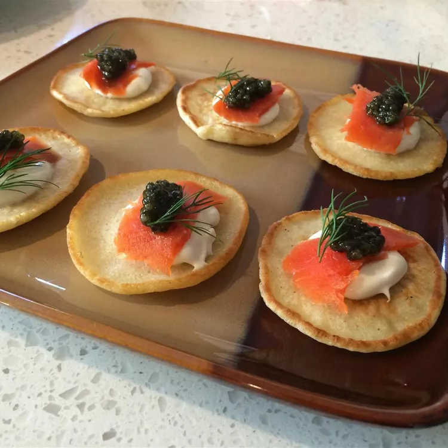

Easy blini

This blini recipe makes bite-sized pancakes that result in perfect appetizers. Top blini with smoked salmon, creme fraiche, or even caviar. Add a sprig of dill and they are sure to impress. My children also love eating these plain too!
Ingredients
- 1 cup all-purpose flour
- ¾ teaspoon salt
- ½ teaspoon baking powder
- ¾ cup milk
- 2 tablespoons milk
- 1 large egg
- 1 tablespoon melted unsalted butter
- 1 tablespoon unsalted butter
Directions
- Combine flour, salt, and baking powder in a bowl.
- Whisk 3/4 cup plus 2 tablespoons milk, egg, and 1 tablespoon melted butter together in a separate bowl. Mix into the flour mixture until the batter is fully combined.
- Heat 1 tablespoon butter in a large skillet over medium-low heat.
Cooking several blini at a time, drop batter, one tablespoon at a time, onto the heated skillet.
Cook until bubbles form, 1 1/2 to 2 minutes. Flip and continue cooking until brown, about 1 minute more.
Move to a paper towel-lined plate to help soak up excess butter.
- Repeat with the remaining batter.
Return to the Homepage